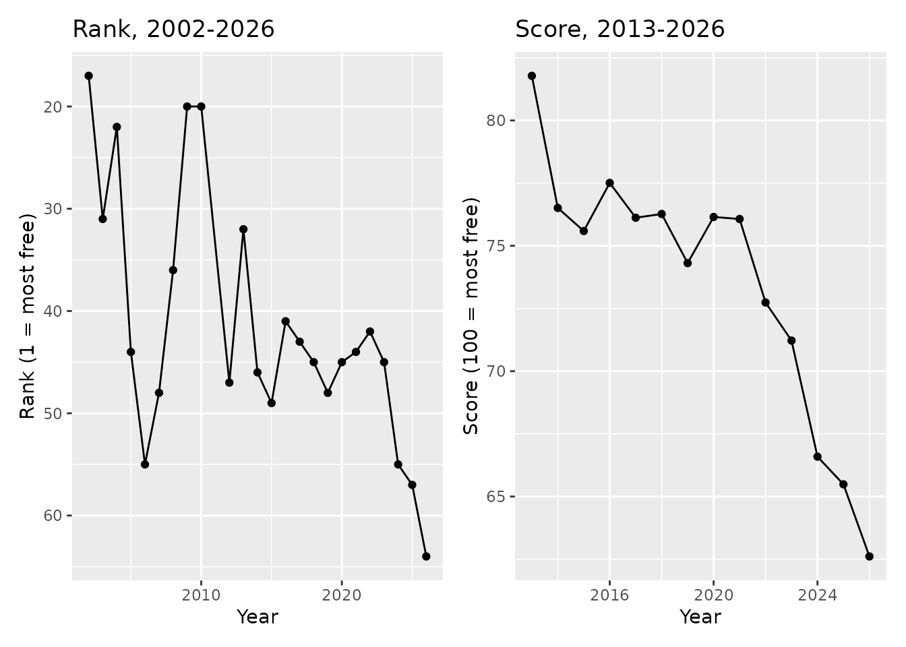
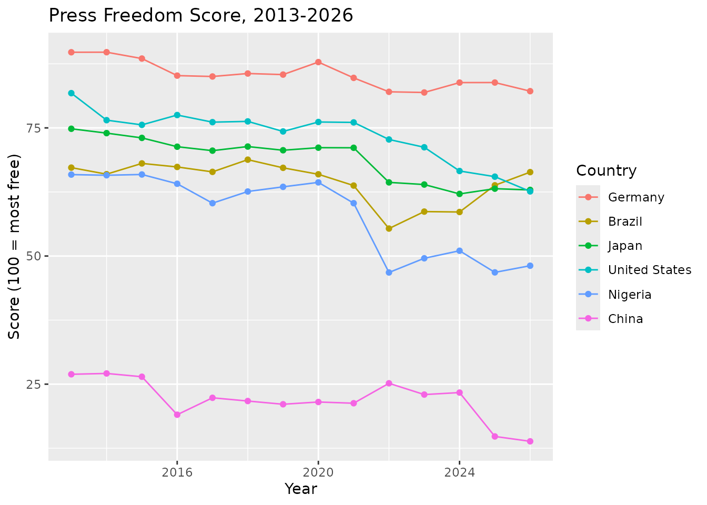
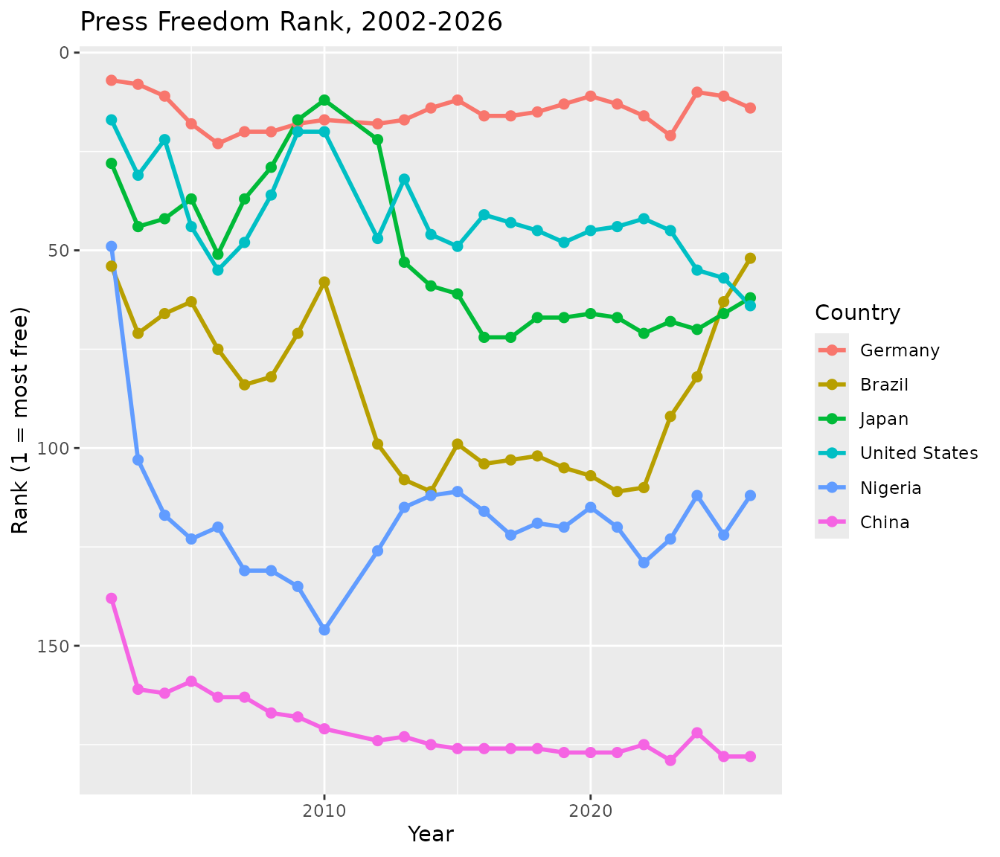
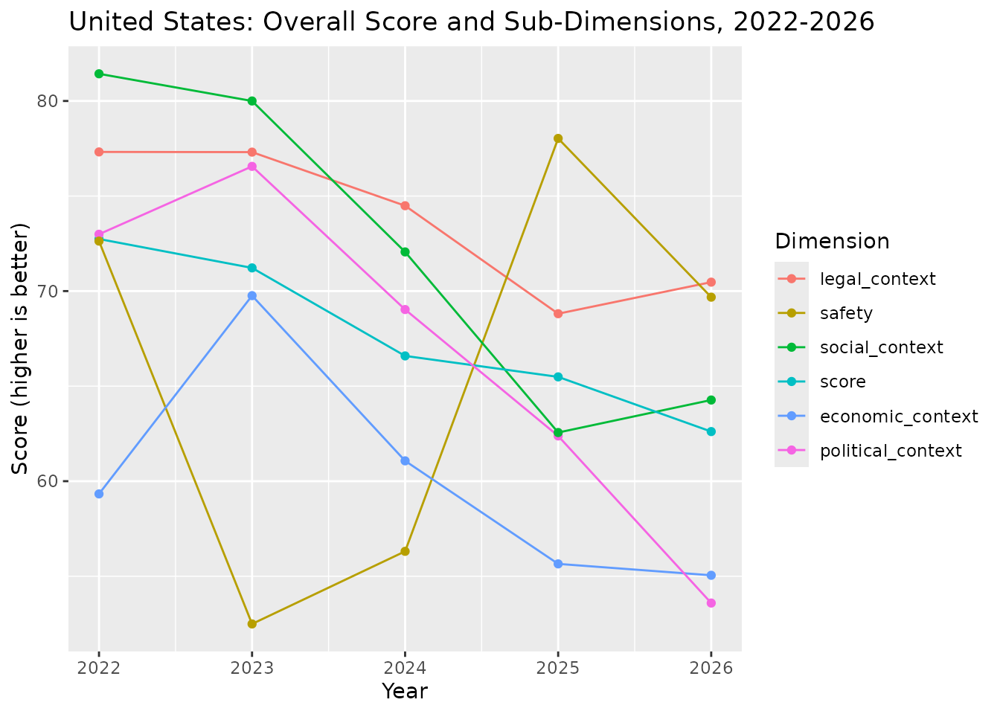
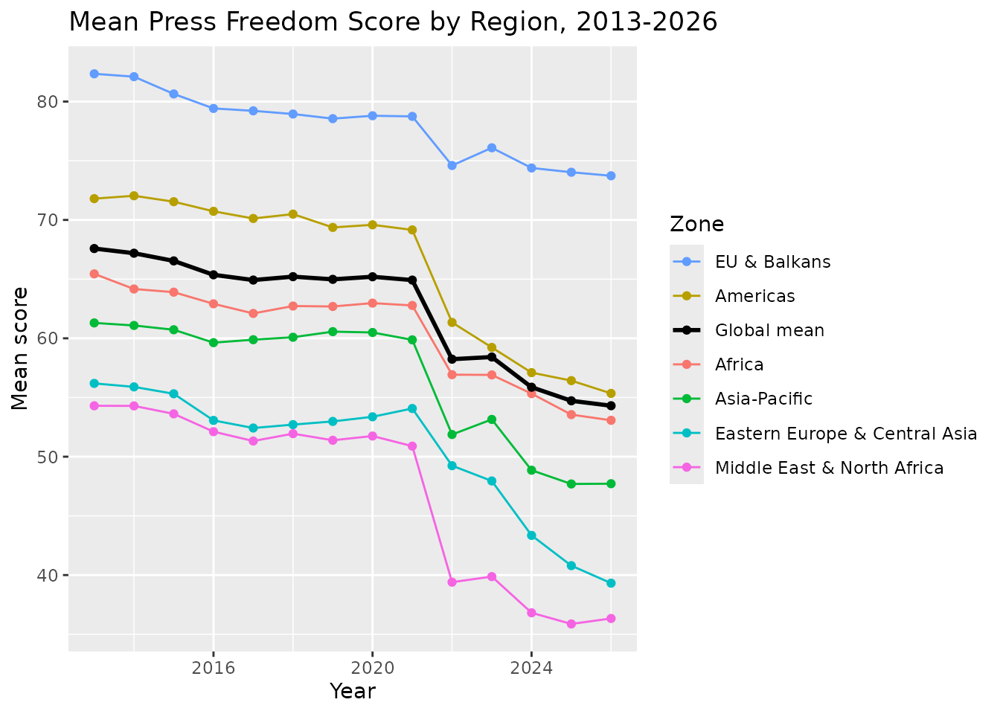
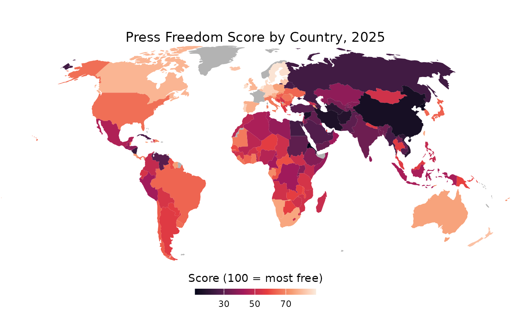

Visualizing Press Freedom Trends
Peter Baumgartner
2026-08-02
Source:vignettes/visualizing-trends.Rmd
visualizing-trends.RmdPurpose
This vignette is a gallery, not an analysis. Its only goal is to show, through a handful of charts, the kinds of questions {pressfreedom.data} makes possible to ask. For instance:
- tracking a single country over time,
- comparing countries against each other,
- breaking a score down into its component dimensions
- following global and regional trends.
None of the charts below are meant to support a substantive conclusion about press freedom; even if some conclusions are not far to seek. Read these charts as demonstrations of the data’s shape and coverage, aimed at researchers deciding whether this dataset is useful for their own work. For a conceptual introduction to the dataset (its columns, time periods, and known data-quality caveats), see vignette(“getting-started”).
Setup
The charts in this vignette use {ggplot2} for line/point charts, including rank-crossing (“bump”) comparisons, and {tidyr} for reshaping wide dimension columns into a long format for plotting. {dplyr} is used throughout for filtering, grouping, and summarizing.
library(pressfreedom.data)
library(dplyr)
#>
#> Attaching package: 'dplyr'
#> The following objects are masked from 'package:stats':
#>
#> filter, lag
#> The following objects are masked from 'package:base':
#>
#> intersect, setdiff, setequal, union
library(ggplot2)
library(tidyr)
library(patchwork)
library(sf)
#> Linking to GEOS 3.12.1, GDAL 3.8.4, PROJ 9.4.0; sf_use_s2() is TRUE
data(rwb_standardized)A reminder before plotting:
-
scoreis only comparable from 2013 onward – RSF changed its scoring methodology that year. -
rankis always comparable across the full 2002-2026 span. It is just a country’s position among that year’s countries. - The five dimension columns (
political_context,economic_context,legal_context,social_context, andsafety) are available from 2022 onward. - The year 2011 is completely missing. RSF.org did not publish data for that year.
Track a Specific Country
rank and score tell complementary stories
for a single country. rank is a country’s position among
that year’s countries, so it is comparable across the whole 2002-2026
span. score uses RSF’s underlying point scale, which is
only comparable from 2013 onward. The two charts below show both for the
United States, side by side, each starting at the year from which its
values are meaningful.
us_rank <- rwb_standardized |>
filter(country_en == "United States", !is.na(rank)) |>
arrange(year_n)
us_score <- rwb_standardized |>
filter(country_en == "United States", year_n >= 2013, !is.na(score)) |>
arrange(year_n)
p_us_rank <- ggplot(us_rank, aes(x = year_n, y = rank)) +
geom_line() +
geom_point() +
scale_y_reverse() +
labs(x = "Year", y = "Rank (1 = most free)", title = "Rank, 2002-2026")
p_us_score <- ggplot(us_score, aes(x = year_n, y = score)) +
geom_line() +
geom_point() +
labs(
x = "Year",
y = "Score (100 = most free)",
title = "Score, 2013-2026"
)
p_us_rank + p_us_score
Compare Countries Over Time
The six countries below – the United States, China, Brazil, Nigeria, Japan, and Germany – span a mix of regions and press-freedom trajectories.
compare_countries <- c(
"United States", "China", "Brazil", "Nigeria", "Japan", "Germany"
)
compare_score <- rwb_standardized |>
filter(country_en %in% compare_countries, year_n >= 2013, !is.na(score)) |>
arrange(country_en, year_n)
compare_rank <- rwb_standardized |>
filter(country_en %in% compare_countries, !is.na(rank)) |>
arrange(country_en, year_n)
# Order the legend to match each country's end-of-series score, top to
# bottom, instead of the alphabetical default
compare_score <- compare_score |>
mutate(country_en = forcats::fct_reorder2(country_en, year_n, score))
ggplot(compare_score, aes(x = year_n, y = score, color = country_en)) +
geom_line() +
geom_point() +
labs(
x = "Year",
y = "Score (100 = most free)",
color = "Country",
title = "Press Freedom Score, 2013-2026"
)
For rank, a bump chart shows how the six countries’ relative
positions cross over the full 2002-2026 span, since rank
does not share score’s 2013 comparability limit:
# `.desc = FALSE` because the y-axis is reversed below (rank 1 = best, drawn
# at the top); ordering the legend ascending by rank keeps it in the same
# top-to-bottom order as the lines at their right-hand endpoints
compare_rank <- compare_rank |>
mutate(country_en = forcats::fct_reorder2(
country_en, year_n, rank,
.desc = FALSE
))
ggplot(compare_rank, aes(x = year_n, y = rank, color = country_en)) +
geom_line(linewidth = 1) +
geom_point(size = 2) +
scale_y_reverse() +
labs(
x = "Year",
y = "Rank (1 = most free)",
color = "Country",
title = "Press Freedom Rank, 2002-2026"
)
Work with Dimensions (2022+)
From 2022 onward, RSF also reports five sub-dimensions (Political,
Economic, Legal, Social, Safety) alongside the overall
score. Reshaping with tidyr::pivot_longer()
makes it easy to plot them together for one country.
us_dims <- rwb_standardized |>
filter(country_en == "United States", year_n >= 2022) |>
select(
year_n, score, political_context, economic_context,
legal_context, social_context, safety
) |>
tidyr::pivot_longer(
cols = -"year_n",
names_to = "dimension",
values_to = "value"
)
# Order the legend to match each dimension's end-of-series value
us_dims <- us_dims |>
mutate(dimension = forcats::fct_reorder2(dimension, year_n, value))
ggplot(us_dims, aes(x = year_n, y = value, color = dimension)) +
geom_line() +
geom_point() +
labs(
x = "Year",
y = "Score (higher is better)",
color = "Dimension",
title = "United States: Overall Score and Sub-Dimensions, 2022-2026"
)
Regional Trends
Averaging score by zone and
year_n (restricted to 2013+, since score is
not comparable before then) shows how regions have diverged. The black
line adds the global mean across all countries for reference.
zone_means <- rwb_standardized |>
filter(year_n >= 2013, !is.na(zone), !is.na(score)) |>
group_by(zone, year_n) |>
summarise(mean_score = mean(score), .groups = "drop")
global_mean <- rwb_standardized |>
filter(year_n >= 2013, !is.na(score)) |>
group_by(year_n) |>
summarise(mean_score = mean(score), .groups = "drop")
zone_colors <- c(
setNames(scales::hue_pal()(dplyr::n_distinct(zone_means$zone)), sort(unique(zone_means$zone))),
"Global mean" = "black"
)
# Order the legend (via `breaks`) to match each line's end-of-series value,
# combining the zones and the global mean into one ranking
legend_order <- bind_rows(
zone_means |>
filter(year_n == max(year_n)) |>
select("zone", "mean_score"),
global_mean |>
filter(year_n == max(year_n)) |>
transmute(zone = "Global mean", mean_score)
) |>
arrange(desc(mean_score)) |>
pull(zone)
ggplot(mapping = aes(x = year_n, y = mean_score, color = zone)) +
geom_line(data = zone_means) +
geom_point(data = zone_means) +
geom_line(
data = global_mean,
aes(color = "Global mean"),
linewidth = 1
) +
geom_point(data = global_mean, aes(color = "Global mean")) +
scale_color_manual(values = zone_colors, breaks = legend_order) +
labs(
x = "Year",
y = "Mean score",
color = "Zone",
title = "Mean Press Freedom Score by Region, 2013-2026"
)
The Six RSF Regions
zone groups countries into six regions, following RSF’s
own regional breakdown. These are RSF’s groupings, not a universal
standard. Note, for instance, that North Africa sits in
Middle East & North Africa rather than
Africa. RSF’s regions follow political/cultural groupings,
not strict continental geography. But nothing stops a researcher from
building alternative regions (e.g. by continent, by income group, by EU
membership) directly from country_en or
iso.
- Africa – Sub-Saharan Africa: Angola, Benin, Botswana, Burkina Faso, Burundi, Cabo Verde, Cameroon, Central African Republic, Chad, Comoros, Congo-Brazzaville, Cote d’Ivoire, DR Congo, Djibouti, Equatorial Guinea, Eritrea, Eswatini, Ethiopia, Gabon, Gambia, Ghana, Guinea, Guinea-Bissau, Kenya, Lesotho, Liberia, Madagascar, Malawi, Mali, Mauritania, Mauritius, Mozambique, Namibia, Niger, Nigeria, Rwanda, Senegal, Seychelles, Sierra Leone, Somalia, South Africa, South Sudan, Sudan, Tanzania, Togo, Uganda, Zambia, Zimbabwe.
- Americas – North, Central, and South America, and the Caribbean: Argentina, Belize, Bolivia, Brazil, Canada, Chile, Colombia, Costa Rica, Cuba, Dominican Republic, Ecuador, El Salvador, Guatemala, Guyana, Haiti, Honduras, Jamaica, Mexico, Nicaragua, OECS, Panama, Paraguay, Peru, Suriname, Trinidad and Tobago, United States, Uruguay, Venezuela.
- Asia-Pacific – Asia and the Pacific: Afghanistan, Australia, Bangladesh, Bhutan, Brunei, Cambodia, China, East Timor, Fiji, Hong Kong, India, Indonesia, Japan, Laos, Malaysia, Maldives, Mongolia, Myanmar, Nepal, New Zealand, North Korea, Pakistan, Papua New Guinea, Philippines, Samoa, Singapore, South Korea, Sri Lanka, Taiwan, Thailand, Tonga, Vietnam.
- Eastern Europe & Central Asia – Commonwealth of Independent States: Armenia, Azerbaijan, Belarus, Georgia, Kazakhstan, Kyrgyzstan, Moldova, Russia, Tajikistan, Turkiye, Turkmenistan, Ukraine, Uzbekistan.
- Middle East & North Africa: Algeria, Bahrain, Egypt, Iran, Iraq, Israel, Jordan, Kuwait, Lebanon, Libya, Morocco / Western Sahara, Oman, Palestine, Qatar, Saudi Arabia, Syria, Tunisia, United Arab Emirates, Yemen.
- EU & Balkans – European Union member states, EFTA countries, the UK, and the Balkans: Albania, Andorra, Austria, Belgium, Bosnia-Herzegovina, Bulgaria, Croatia, Cyprus, Czechia, Denmark, Estonia, Finland, France, Germany, Greece, Hungary, Iceland, Ireland, Italy, Kosovo, Latvia, Liechtenstein, Lithuania, Luxembourg, Malta, Montenegro, Netherlands, North Macedonia, Northern Cyprus, Norway, Poland, Portugal, Romania, Serbia, Slovakia, Slovenia, Spain, Sweden, Switzerland, United Kingdom.
A World Map of Press Freedom (2025)
A choropleth map gives an at-a-glance view of where press freedom
stands globally in a single year. World country boundaries come from
{rnaturalearth}; joining them to rwb_standardized requires
a common key, which is iso (the package’s ISO 3-letter
code) against iso_a3 in the map data.
world <- rnaturalearth::ne_countries(scale = "small", returnclass = "sf") |>
# Drop Antarctica, keeps the map focused on populated landmass
dplyr::filter(.data$continent != "Antarctica")
scores_2025 <- rwb_standardized |>
filter(year_n == 2025, !is.na(score)) |>
select("iso", "score")
world_scores <- world |>
left_join(scores_2025, by = c("iso_a3" = "iso"))A handful of small territories in the map data (dependencies,
disputed territories) do not have a matching row in
rwb_standardized, since RSF only rates sovereign states;
these are shown in grey.
ggplot(world_scores) +
geom_sf(aes(fill = score), color = NA) +
scale_fill_viridis_c(
option = "rocket",
na.value = "grey70",
name = "Score (100 = most free)",
guide = guide_colorbar(
title.position = "top",
title.hjust = 0.5,
barwidth = unit(120, "pt"),
barheight = unit(6, "pt")
)
) +
coord_sf(
crs = "+proj=robin",
# Crop near the poles (Antarctica already dropped) to remove
# the empty white space a full-globe Robinson projection leaves
# above and below the populated landmass
default_crs = sf::st_crs(4326),
xlim = c(-180, 180),
ylim = c(-60, 85),
expand = FALSE
) +
theme_void() +
theme(
plot.title = element_text(hjust = 0.5),
legend.position = "bottom",
plot.margin = margin(0, 0, 0, 0)
) +
labs(title = "Press Freedom Score by Country, 2025")